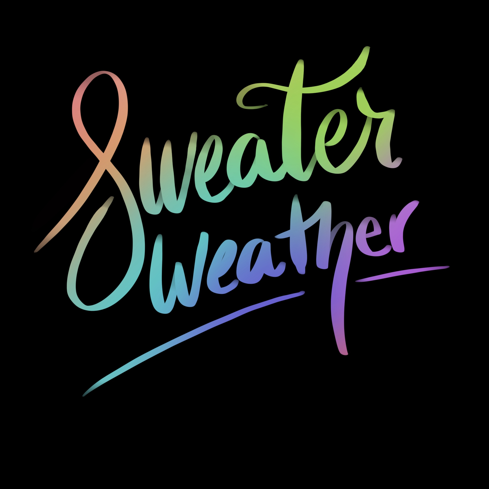

  <div class="content">
    <div class="grid grid-middle">
      <div class="unit xs-1 gutter-1-2 pad-b-1-2">
      <div class="embed embed-4by3">
        
      </div>
    </div>
    <div class="unit xs-1 gutter text-center">
      <p>Handlettered illustration created using Procreate. Using a simple brush pen and mask tool,I was able to give my lettering and extra Umph with a beatiful gradient background </p>
  </div>

  </div>
</body>
</html>
